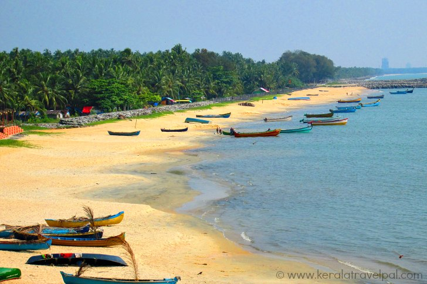

Much of India is surrounded by ocean and the country has some incredibly scenic beaches that offer everything from solitude to parties. The best beaches in India can be found on the west coast, with Goa being the most famous beach destination. However, there are other places to consider as well, especially if you want to get away from the tourist trail.


Of note, in October 2020, eight Indian beaches were awarded Blue Flag certification by the Foundation for Environmental Education in Denmark. The beaches are Puri Golden Beach in Odisha, Shivrajpur in Gujarat, Ghoghla in Diu, Kasarkod and Padubidri in Karnataka, Kappad in Kerala, Rushikonda in Andhra Pradesh, and Radhanagar in Andaman and Nicobar Islands.
The Blue Flag certification means these beaches are clean, safe, and environmentally-friendly.